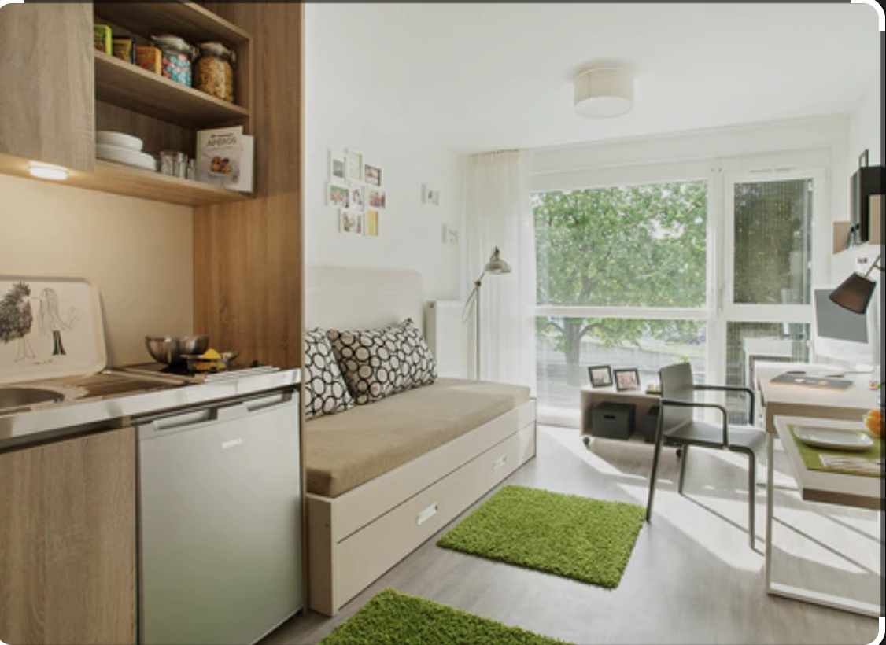

S'installer n'a jamais été aussi simple.
LocaBox révolutionne l'équipement étudiant. Louez des kits reconditionnés complets pour votre logement, livrés et installés avant votre arrivée.
Économique, sans tracas et 100% responsable.
Voir les Packs Disponibles

Notre Originalité : Le LocaBox Green Score
Chaque LocaBox que vous composez est livrée avec son Green Score. Ce score est calculé en fonction du cycle de vie des produits choisis.
Qu'est-ce que vous gagnez ?
- Économie d'eau (en litres) par rapport à l'achat neuf.
- Réduction de CO2 (en kg équivalent).
- Prolongement du cycle de vie (en années).
C'est une preuve tangible de votre impact positif. Une démarche simple, responsable et engagée.
En savoir plus sur notre impact
Processus Simple, Impact Maximal
Je compose ma Box
Je sélectionne mon kit vaisselle et mes électroménagers.
Je reçois ma Box
Livrée, installée, prête à l’usage le jour choisi.
Je rends ma Box
Nous récupérons tout : zéro déchet, zéro revente.